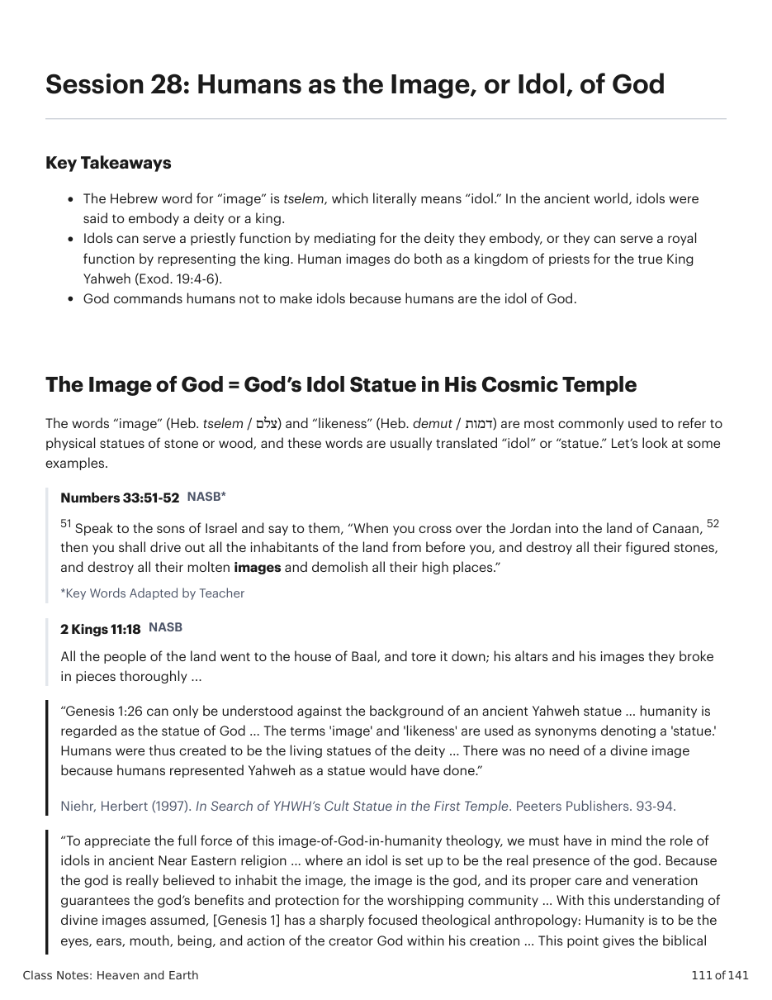
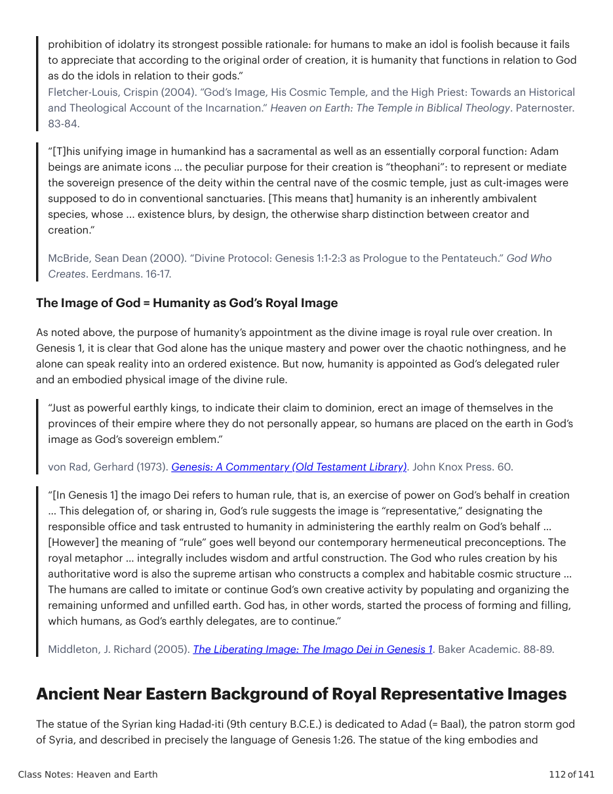
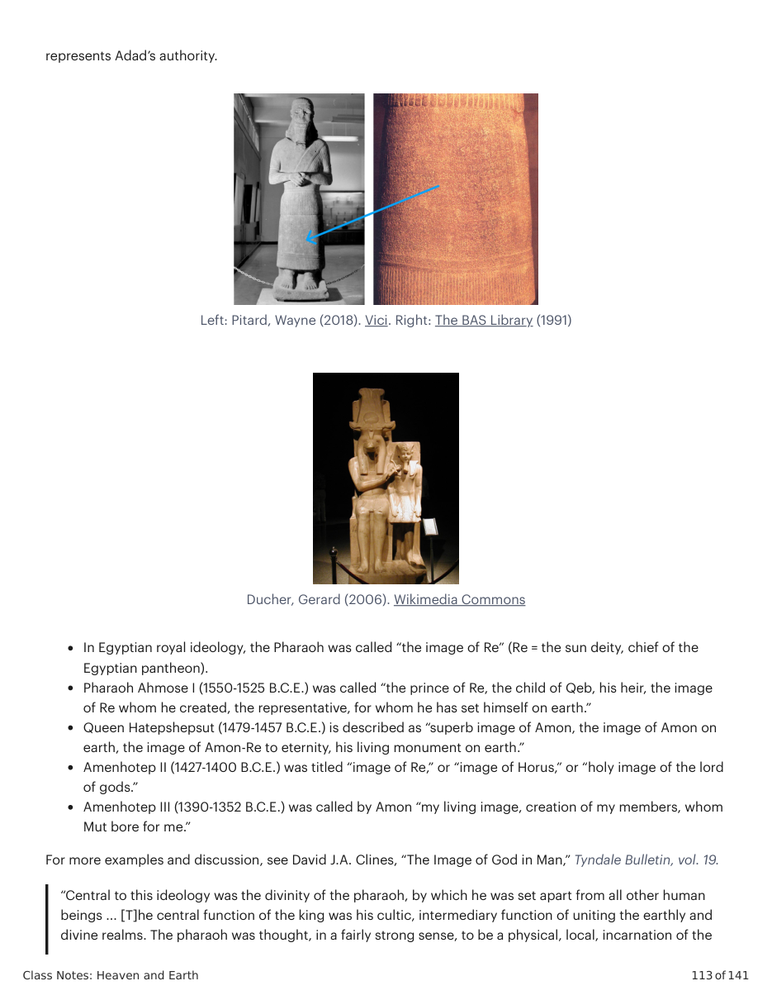
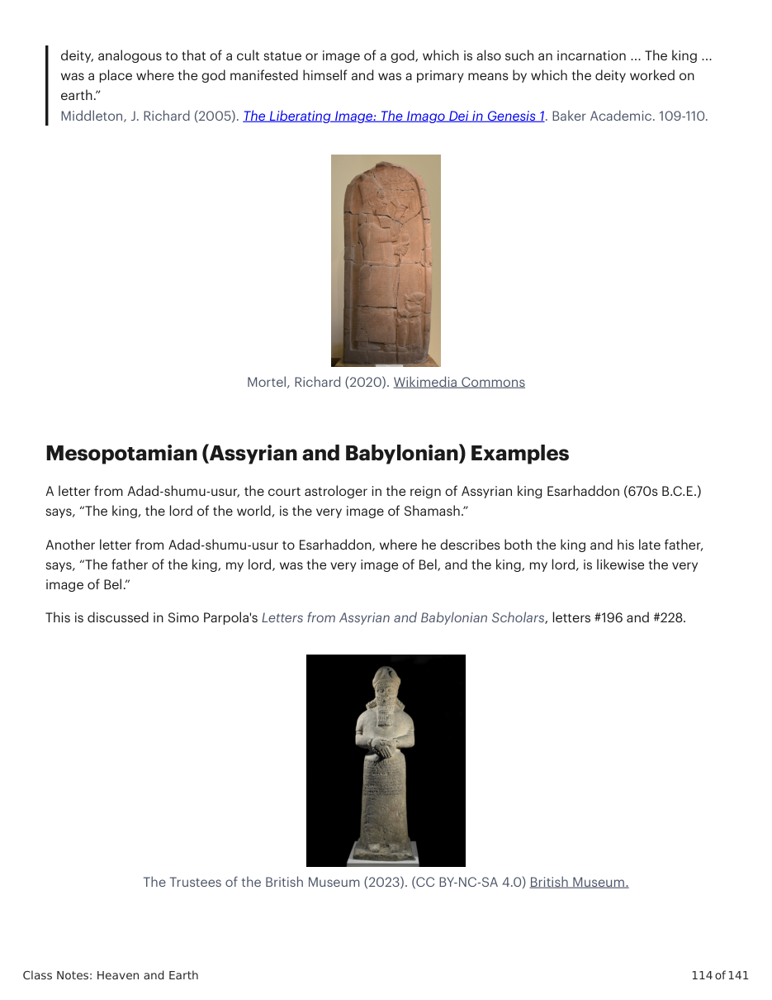
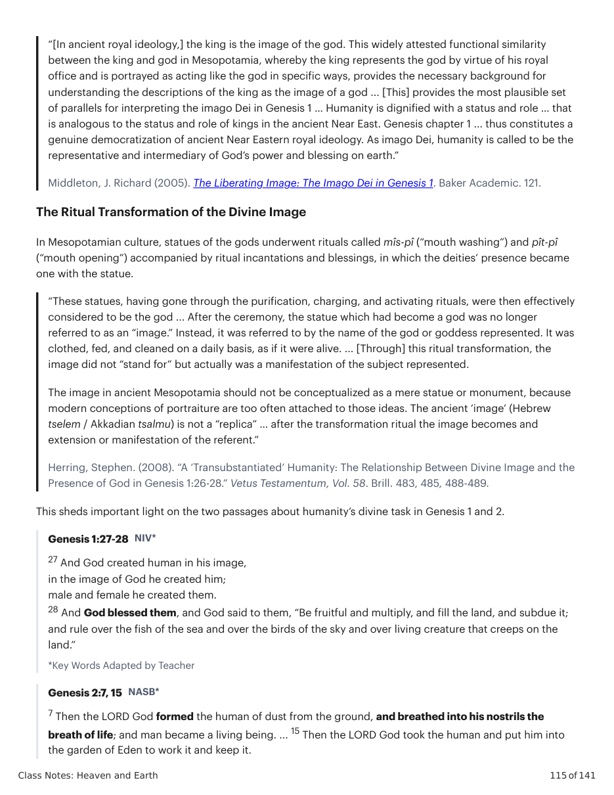
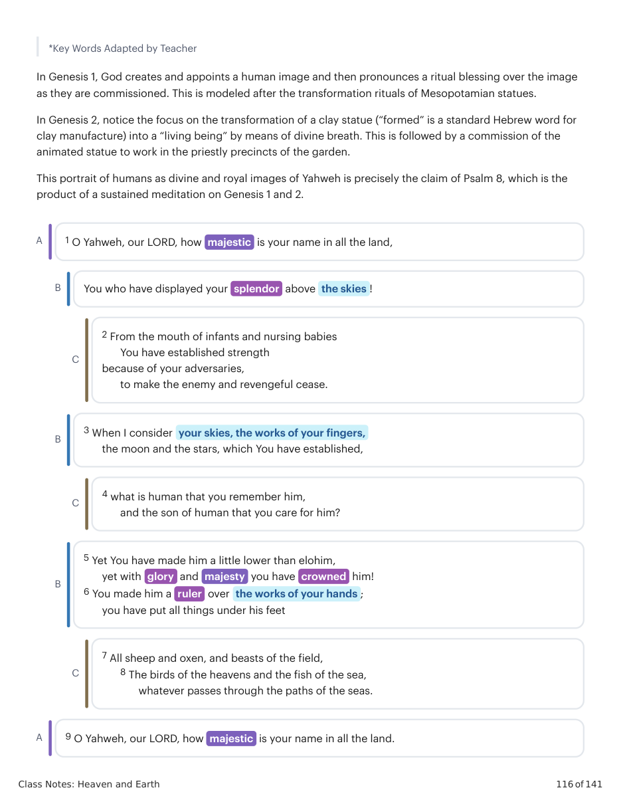
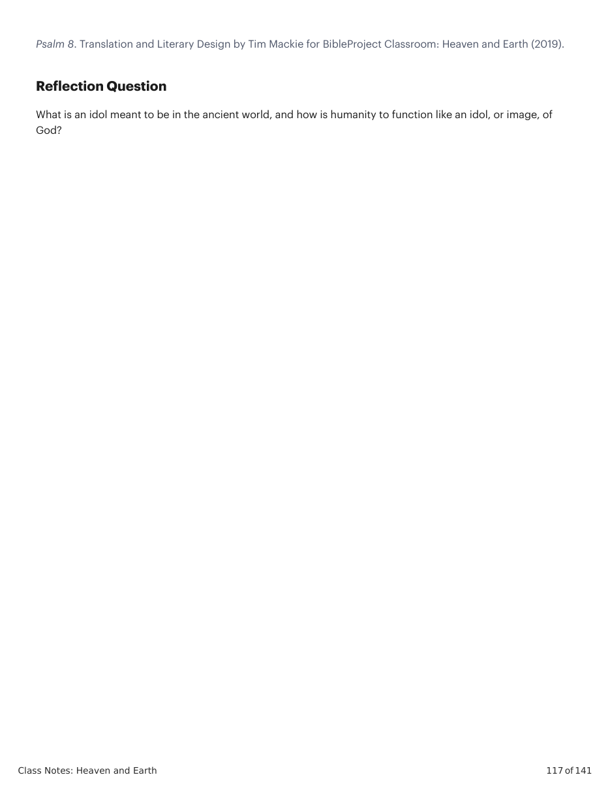

The Image of God = God’s Idol Statue in His Cosmic Temple
The words “image” (Heb. tselem / צלם) and “likeness” (Heb. demut / דמות) are most commonly used to refer to physical statues of stone or wood, and these words are usually translated “idol” or “statue.” Let’s look at some examples. Numbers 33:51-52 NASB* 51 Speak to the sons of Israel and say to them, “When you cross over the Jordan into the land of Canaan, 52 then you shall drive out all the inhabitants of the land from before you, and destroy all their figured stones, and destroy all their molten images and demolish all their high places.” *Key Words Adapted by Teacher 2 Kings 11:18 NASB All the people of the land went to the house of Baal, and tore it down; his altars and his images they broke in pieces thoroughly ... “Genesis 1:26 can only be understood against the background of an ancient Yahweh statue … humanity is regarded as the statue of God … The terms 'image' and 'likeness' are used as synonyms denoting a 'statue.' Humans were thus created to be the living statues of the deity … There was no need of a divine image because humans represented Yahweh as a statue would have done.”
Niehr, Herbert (1997). In Search of YHWH’s Cult Statue in the First Temple. Peeters Publishers. 93-94.
“To appreciate the full force of this image-of-God-in-humanity theology, we must have in mind the role of idols in ancient Near Eastern religion … where an idol is set up to be the real presence of the god. Because the god is really believed to inhabit the image, the image is the god, and its proper care and veneration guarantees the god’s benefits and protection for the worshipping community … With this understanding of divine images assumed, [Genesis 1] has a sharply focused theological anthropology: Humanity is to be the eyes, ears, mouth, being, and action of the creator God within his creation … This point gives the biblical prohibition of idolatry its strongest possible rationale: for humans to make an idol is foolish because it fails to appreciate that according to the original order of creation, it is humanity that functions in relation to God as do the idols in relation to their gods.”
Fletcher-Louis, Crispin (2004). “God’s Image, His Cosmic Temple, and the High Priest: Towards an Historical
and Theological Account of the Incarnation.” Heaven on Earth: The Temple in Biblical Theology. Paternoster. 83-84. “[T]his unifying image in humankind has a sacramental as well as an essentially corporal function: Adam beings are animate icons … the peculiar purpose for their creation is “theophani”: to represent or mediate the sovereign presence of the deity within the central nave of the cosmic temple, just as cult-images were supposed to do in conventional sanctuaries. [This means that] humanity is an inherently ambivalent species, whose ... existence blurs, by design, the otherwise sharp distinction between creator and creation.”
McBride, Sean Dean (2000). “Divine Protocol: Genesis 1:1-2:3 as Prologue to the Pentateuch.” God Who
Creates. Eerdmans. 16-17.
The Image of God = Humanity as God’s Royal Image
As noted above, the purpose of humanity’s appointment as the divine image is royal rule over creation. In Genesis 1, it is clear that God alone has the unique mastery and power over the chaotic nothingness, and he alone can speak reality into an ordered existence. But now, humanity is appointed as God’s delegated ruler and an embodied physical image of the divine rule. “Just as powerful earthly kings, to indicate their claim to dominion, erect an image of themselves in the provinces of their empire where they do not personally appear, so humans are placed on the earth in God’s image as God’s sovereign emblem.”
von Rad, Gerhard (1973). Genesis: A Commentary (Old Testament Library). John Knox Press. 60.
“[In Genesis 1] the imago Dei refers to human rule, that is, an exercise of power on God’s behalf in creation … This delegation of, or sharing in, God’s rule suggests the image is “representative,” designating the responsible office and task entrusted to humanity in administering the earthly realm on God’s behalf … [However] the meaning of “rule” goes well beyond our contemporary hermeneutical preconceptions. The royal metaphor … integrally includes wisdom and artful construction. The God who rules creation by his authoritative word is also the supreme artisan who constructs a complex and habitable cosmic structure … The humans are called to imitate or continue God’s own creative activity by populating and organizing the remaining unformed and unfilled earth. God has, in other words, started the process of forming and filling, which humans, as God’s earthly delegates, are to continue.”
Middleton, J. Richard (2005). The Liberating Image: The Imago Dei in Genesis 1. Baker Academic. 88-89.
Left: Pitard, Wayne (2018). Vici. Right: The BAS Library (1991)
Ducher, Gerard (2006). Wikimedia Commons
In Egyptian royal ideology, the Pharaoh was called “the image of Re” (Re = the sun deity, chief of the Egyptian pantheon). Pharaoh Ahmose I (1550-1525 B.C.E.) was called “the prince of Re, the child of Qeb, his heir, the image of Re whom he created, the representative, for whom he has set himself on earth.” Queen Hatepshepsut (1479-1457 B.C.E.) is described as “superb image of Amon, the image of Amon on earth, the image of Amon-Re to eternity, his living monument on earth.” Amenhotep II (1427-1400 B.C.E.) was titled “image of Re,” or “image of Horus,” or “holy image of the lord of gods.” Amenhotep III (1390-1352 B.C.E.) was called by Amon “my living image, creation of my members, whom Mut bore for me.” For more examples and discussion, see David J.A. Clines, “The Image of God in Man,” Tyndale Bulletin, vol. 19. “Central to this ideology was the divinity of the pharaoh, by which he was set apart from all other human beings ... [T]he central function of the king was his cultic, intermediary function of uniting the earthly and divine realms. The pharaoh was thought, in a fairly strong sense, to be a physical, local, incarnation of the deity, analogous to that of a cult statue or image of a god, which is also such an incarnation ... The king ... was a place where the god manifested himself and was a primary means by which the deity worked on earth.”
Middleton, J. Richard (2005). The Liberating Image: The Imago Dei in Genesis 1. Baker Academic. 109-110.
Mortel, Richard (2020). Wikimedia Commons
The Trustees of the British Museum (2023). (CC BY-NC-SA 4.0) British Museum.
“[In ancient royal ideology,] the king is the image of the god. This widely attested functional similarity between the king and god in Mesopotamia, whereby the king represents the god by virtue of his royal office and is portrayed as acting like the god in specific ways, provides the necessary background for understanding the descriptions of the king as the image of a god ... [This] provides the most plausible set of parallels for interpreting the imago Dei in Genesis 1 … Humanity is dignified with a status and role … that is analogous to the status and role of kings in the ancient Near East. Genesis chapter 1 ... thus constitutes a genuine democratization of ancient Near Eastern royal ideology. As imago Dei, humanity is called to be the representative and intermediary of God’s power and blessing on earth.”
Middleton, J. Richard (2005). The Liberating Image: The Imago Dei in Genesis 1. Baker Academic. 121.
The Ritual Transformation of the Divine Image
In Mesopotamian culture, statues of the gods underwent rituals called mîs-pî (“mouth washing”) and pît-pî (“mouth opening”) accompanied by ritual incantations and blessings, in which the deities’ presence became one with the statue. “These statues, having gone through the purification, charging, and activating rituals, were then effectively considered to be the god ... After the ceremony, the statue which had become a god was no longer referred to as an “image.” Instead, it was referred to by the name of the god or goddess represented. It was clothed, fed, and cleaned on a daily basis, as if it were alive. ... [Through] this ritual transformation, the image did not “stand for” but actually was a manifestation of the subject represented. The image in ancient Mesopotamia should not be conceptualized as a mere statue or monument, because modern conceptions of portraiture are too often attached to those ideas. The ancient ‘image’ (Hebrew tselem / Akkadian tsalmu) is not a “replica” … after the transformation ritual the image becomes and extension or manifestation of the referent.”
Herring, Stephen. (2008). “A ‘Transubstantiated’ Humanity: The Relationship Between Divine Image and the
Presence of God in Genesis 1:26-28.” Vetus Testamentum, Vol. 58. Brill. 483, 485, 488-489. This sheds important light on the two passages about humanity’s divine task in Genesis 1 and 2. Genesis 1:27-28 NIV* 27 And God created human in his image, in the image of God he created him; male and female he created them. 28 And God blessed them, and God said to them, “Be fruitful and multiply, and fill the land, and subdue it; and rule over the fish of the sea and over the birds of the sky and over living creature that creeps on the land.” *Key Words Adapted by Teacher Genesis 2:7, 15 NASB* 7 Then the LORD God formed the human of dust from the ground, and breathed into his nostrils the breath of life; and man became a living being. ... 15 Then the LORD God took the human and put him into the garden of Eden to work it and keep it. *Key Words Adapted by Teacher In Genesis 1, God creates and appoints a human image and then pronounces a ritual blessing over the image as they are commissioned. This is modeled after the transformation rituals of Mesopotamian statues. In Genesis 2, notice the focus on the transformation of a clay statue (“formed” is a standard Hebrew word for clay manufacture) into a “living being” by means of divine breath. This is followed by a commission of the animated statue to work in the priestly precincts of the garden. This portrait of humans as divine and royal images of Yahweh is precisely the claim of Psalm 8, which is the product of a sustained meditation on Genesis 1 and 2. A 1 O Yahweh, our LORD, how majestic is your name in all the land, B You who have displayed your splendor above the skies ! C 2 From the mouth of infants and nursing babies You have established strength because of your adversaries, to make the enemy and revengeful cease. B 3 When I consider your skies, the works of your fingers, the moon and the stars, which You have established, C 4 what is human that you remember him, and the son of human that you care for him? B 5 Yet You have made him a little lower than elohim, yet with glory and majesty you have crowned him! 6 You made him a ruler over the works of your hands ; you have put all things under his feet C 7 All sheep and oxen, and beasts of the field, 8 The birds of the heavens and the fish of the sea, whatever passes through the paths of the seas. A 9 O Yahweh, our LORD, how majestic is your name in all the land.
Psalm 8. Translation and Literary Design by Tim Mackie for BibleProject Classroom: Heaven and Earth (2019).
What is an idol meant to be in the ancient world, and how is humanity to function like an idol, or image, of God?






